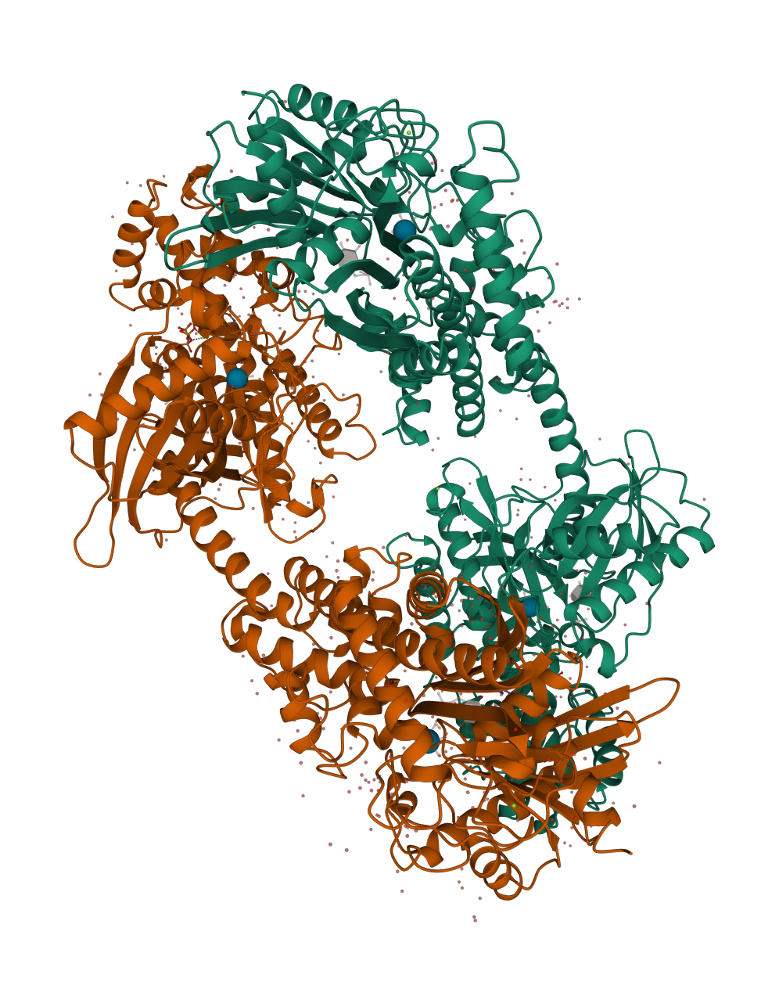
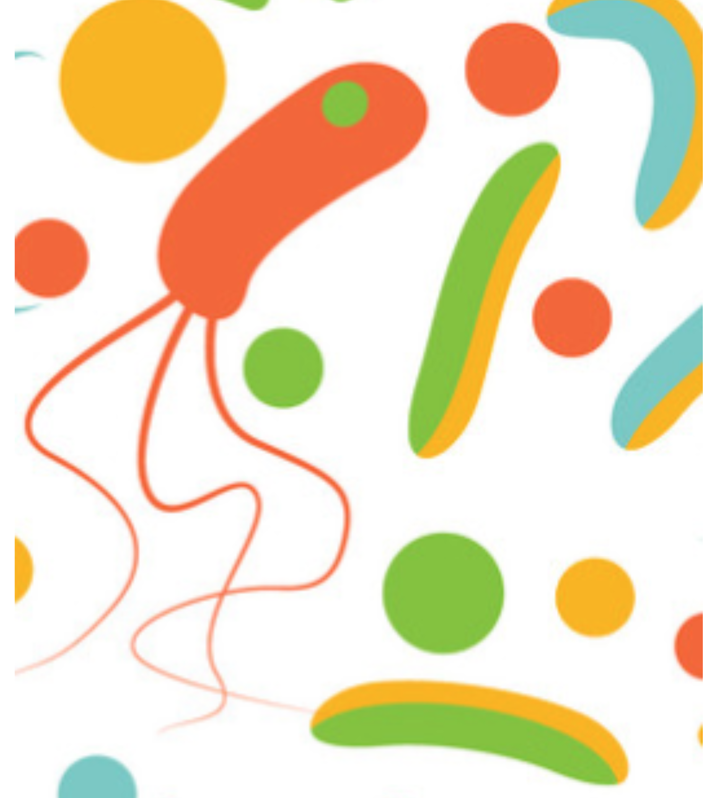

Presentations
Great Lakes Bioinformatics Conference - May 2021 (Virtual) & Presented: Integrating Current Analyses of the Breast Cancer Microbiome
Loyola University Chicago's 14th Annual Interdisciplinary Graduate Research Symposium - March 2021 (Virtual) & Presented: Integrating Current Analyses of the Breast Cancer Microbiome
American Society for Microbiology - June 2020 (Virtual) & Presented: Human Steroid Hormones Influence Gut Microbial Community Structure
Graduate Courses
Bioinformatics Research Design
Bioinformatics
Exploring Proteins
Advanced Bioinformatics
Microbiology